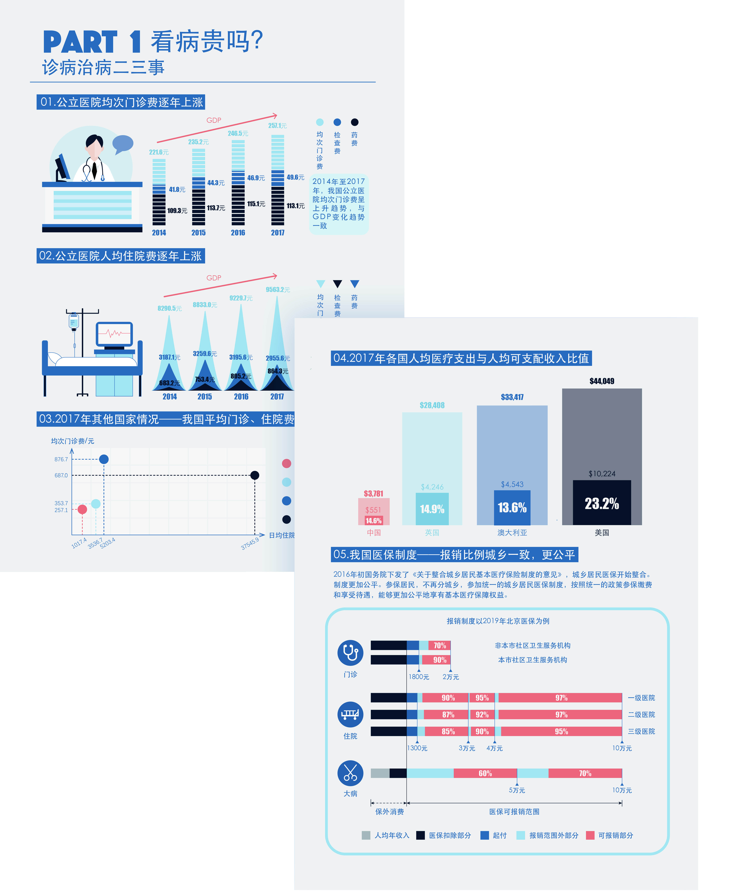
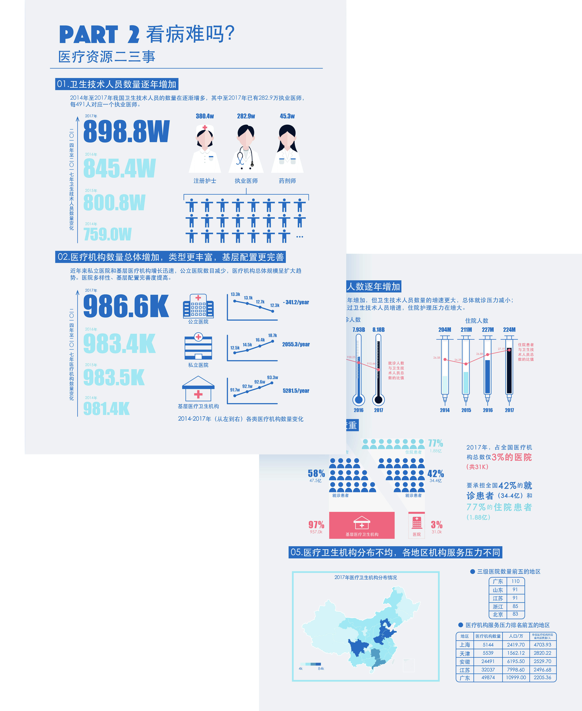
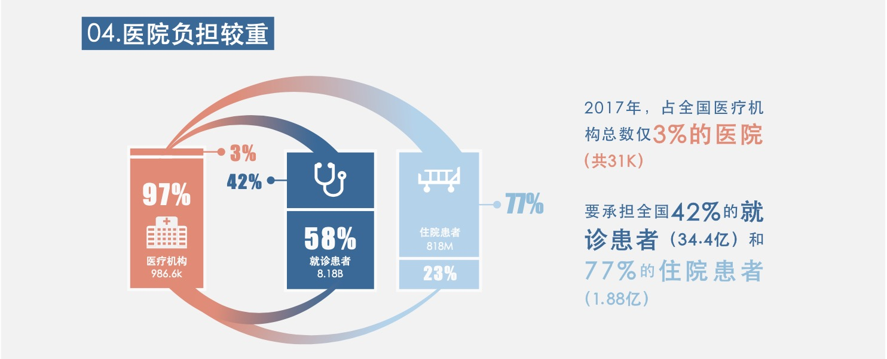
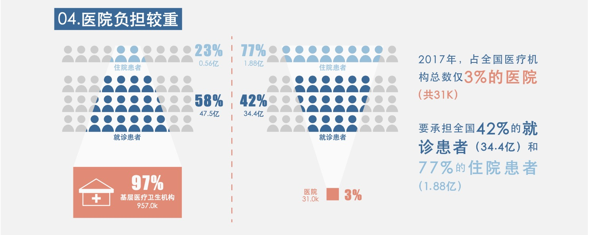

----This page contains many images, please wait a few seconds for loading----
Introduction
Something about Medical Industry in China
- Mentor: Fang Liu
- Partner: Shuyu Lin
- Reward: Second Prize of National China Computer Design Contest for Undergraduates
Why choose this topic
- Medical industry is always a hot topic in people’s livelihood. And at that time our health insurance policy got a big reform. This reform revoked widespread discussion. Some people supported it, some people expressed skepticism and aversion to this reform. We chose this theme and wanted to gather more comprehensive information about our medical system and resources and presented this information objectively, accurately, and vividly
- My boyfriend is a medical student and Shuyu’s grandfather is a doctor. Besides, at that time there were many news reported some vicious doctor-patient conflicts. we hope our work could help the public learn more about doctors’ working environment from different perspectives
Design Ideas
- Goal：Select two or three questions which are relative with people’s daily life. Use these questions as a starting point to do more extensions
- Illustration: Histogram, line chart, contradistinction and tendency
- Style: Card layout, flat, color
Structure of this work
- Introduction
In this part. We briefly introduce the content and purpose of this work by coming up three questions. They are “Is it expensive for us to see a doctor today?”, “Is it convenient for us to get medical treatment in todays society?” and “Are our doctors tired?”. The summary question is “Do you satisfied with our medical resources?”

- Part 1
The topic of part 1 is “Is it expensive for us to see a doctor?” This part answers this question from five perspectives. They are outpatient cost per capita and hospital expenses per capita from 2014 to 2018, outpatient cost per capita and hospital expenses per capita in China and other three countries in 2017, the ratio of medical expenditure per capita to disposable income per capita of these four countries in 2017, and our medical insurance system.
- Part 2
Part 2 consists of five sections. The number of medical and health personnel, the number of medical and health institutions and the number of patients from 2014 to 2017, the distribution of patients in medical health institutions and the distribution of medical and health institutions in 2017. We try to use these sections to answer “Is it inconvenient for us to get treatment?”
- Part 3
This part describe the doctors’ working environment by showing four kinds of statistics. They are doctors’ health, working hour, conflicts with patients and salary. We want to use these statistics to answer the question-"are doctors tired?”

- Summary
In this section, we briefly summarize the current situation of medical industry in China and call on that everyone could take a rational view of the current situation.

Modification process
To illustrate and present information better, We have made 11 time changes to this work. Take the fourth section of part 2 as an example. In this section, we try to present the information that in 2017, statistics show that 42% of outpatients and 77% of inpatients chose to go to hospitals for treatment, and the number of hospitals accounted for only 3% of the total number of medical & health institutions. The main point in this information is the huge contrast between these numbers. It seemed like this information was not complex, but illustrate this contrast clearly was a big challenge. We made 5 version, tried different graphs and methons, and it was apparent that the last version had the best effect.





Content Display